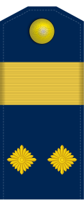

Činovi
Vojvode Stepe Stepanovića

Vojvode Stepe Stepanovića
Vojvoda Stepa Stepanović stigao je do njavećeg čina vojske Kraljevine Srbije odnosno vojske Kraljevine Jugoslavije - vojvode:
| Naziv čina | Datum dobijanja čina | Oznaka čina |
|---|---|---|
| Kaplar | 6. septembar 1875. godine | |
| Podnarednik | 6. septembar 1875. godine |  |
| Narednik | 6. septembar 1875. godine | |
| Potporučnik | 6. septembar 1875. godine | |
| Poručnik | 6. septembar 1875. godine | |
| Kapetan druge klase | 6. septembar 1875. godine | |
| Kapetan prve klase | 6. septembar 1875. godine | |
| Major | 6. septembar 1875. godine | |
| Potpukovnik | 6. septembar 1875. godine | |
| Pukovnik | 6. septembar 1875. godine | |
| General | 6. septembar 1875. godine | |
| Vojvoda | 6. septembar 1875. godine |